自动识谱
支持 JPG / PNG / 截图 / PDF 导入；内置快速引擎 0.2 秒出结果，桌面端还可以接 Audiveris 或 AI 视觉模型提升精度。
Nota 是一款白色极简的五线谱演奏台：识谱导入、钢琴演奏、编辑写谱，还内置练耳与收藏循环。拍照、导入 MusicXML/MIDI，或从零写一首；可调 BPM、单曲/专辑/收藏循环，甚至能听出大三度和小三度。
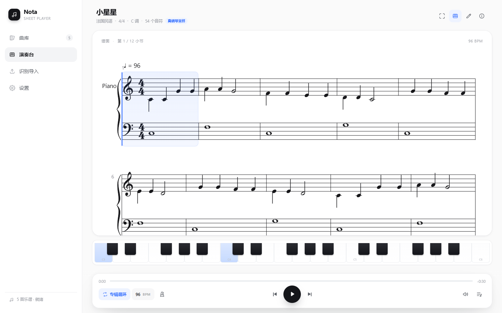
能识谱、能编辑、能演奏、能导出。全部在本地完成，不上传你的乐谱。
支持 JPG / PNG / 截图 / PDF 导入；内置快速引擎 0.2 秒出结果，桌面端还可以接 Audiveris 或 AI 视觉模型提升精度。
内置 Salamander 三角钢琴采样，不是电子音；也可以切换柔和钢琴或电子音色，音量、节拍器、钢琴键盘都可调。
实时调整速度，支持单曲循环、专辑循环、顺序播放；可设置每首曲子的播放前预备倒计时与提示音。
音符键盘 + 打字输入模式：A–G 写音名、1–6 选时值；手机也能调出系统键盘写谱，编辑面板会自动让出谱面空间。
导入原谱图片作为参考：可半透明铺在谱面下方，也可放进可拖动、可拉伸的悬浮小窗，跟着原谱写谱不跑偏。
支持导入 MusicXML / MXL / MIDI，曲库一键导出 MusicXML 与 MIDI；导出的谱子可直接用 MuseScore 打开。
从识谱到练耳，从收藏循环到自由编辑，Nota 把一套完整的学习与演奏工具放在同一个白色界面里。
自动在 C3–C6 随机弹两个音，让你判断是大三度还是小三度。答题前不显示五线谱和音名，不泄露答案。
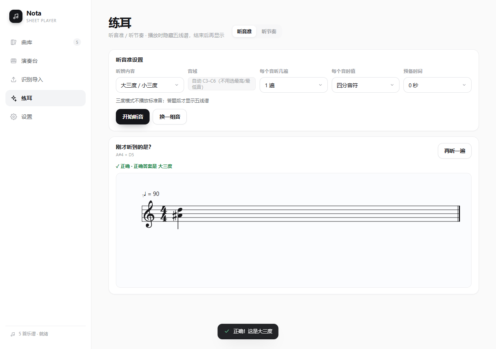
软件从你选的节奏型里随机抽取、随机组合，绝不按你选择的顺序播放；听后显示这次随机生成的节奏。
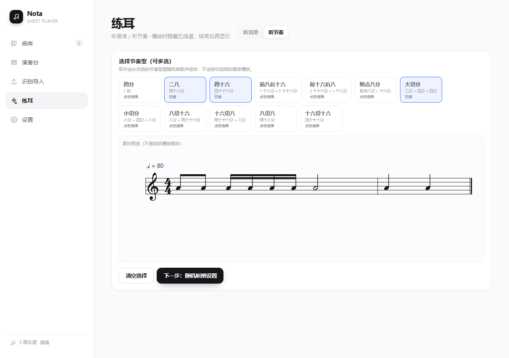
点封面上的 ♥ 收藏，曲库可切换「全部曲库 / 收藏合集」；一键收藏循环，播放队列也只包含收藏谱。
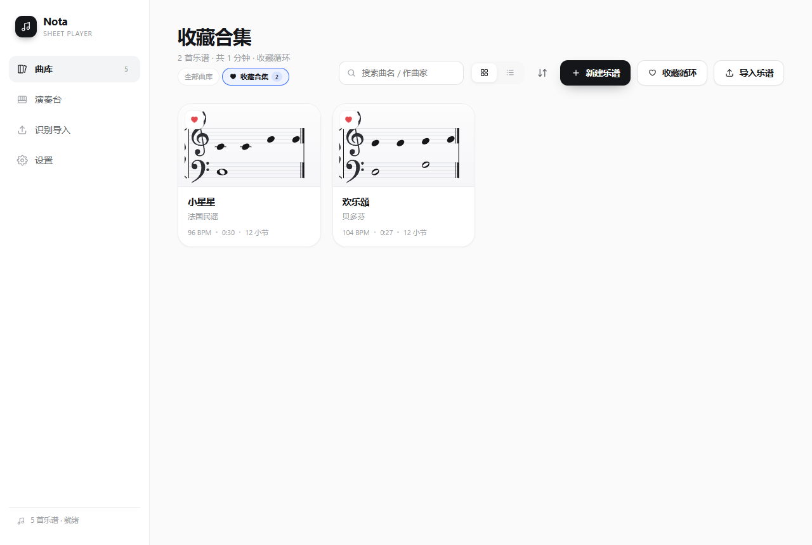
编辑面板切换成四行输入：谱表、时值、简谱 1–7、八度；手机紧凑贴合，电脑可自由拉伸，输入时不用调系统键盘。
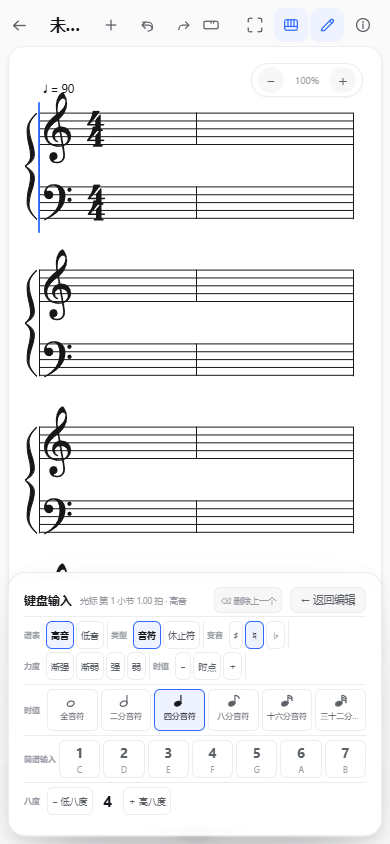
没有多余按钮，打开就能看谱、听谱、改谱。
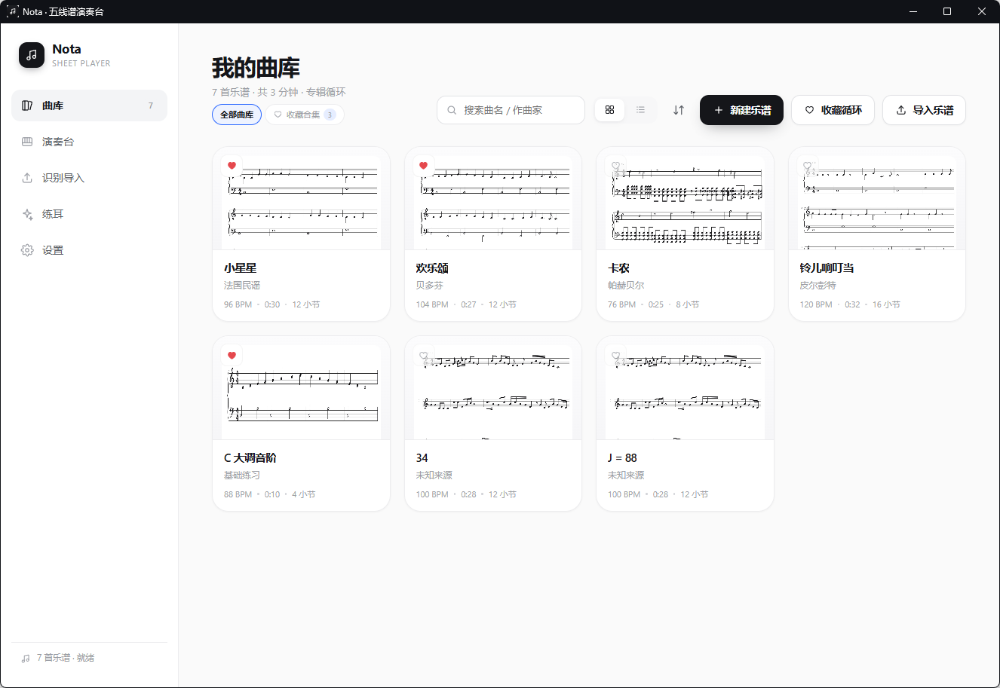
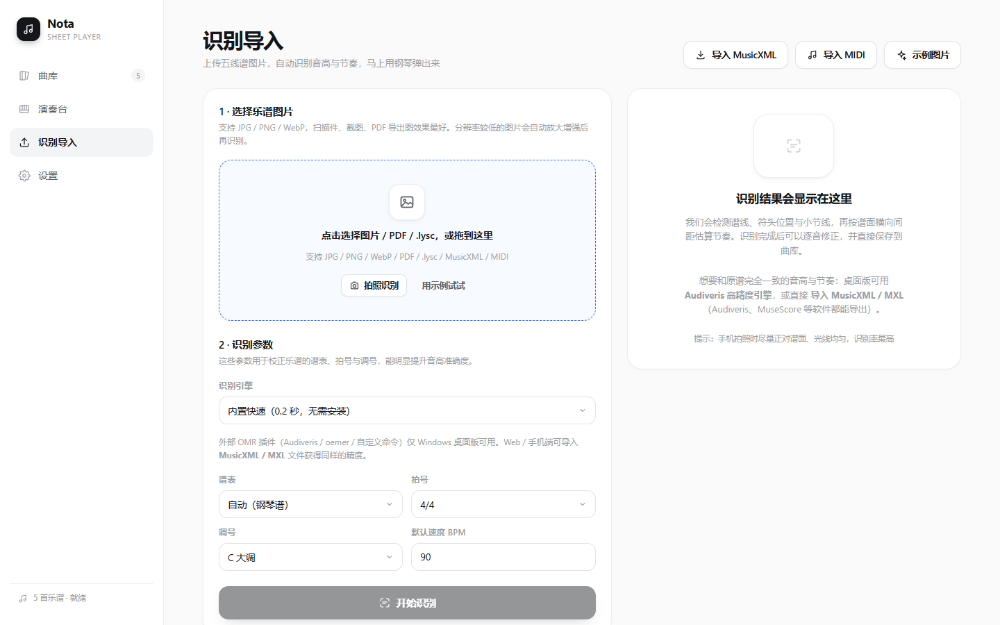
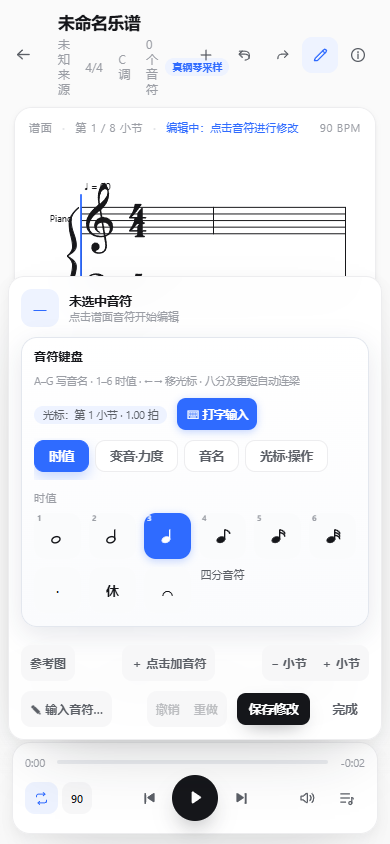
当前版本 v1.48.0 · 更新于 2026-11-11 · Windows 10/11 64 位、Android 6.0+。 安装包下载由 GitHub Releases 提供（国内访问可能需要加速）。所有安装包都没有代码签名，安装时若系统提示请选择“仍要运行 / 信任”。
下载后双击直接运行，无需安装；适合放在桌面或 U 盘。
↓ 下载便携版E18868B9…0AD9659E
解压到任意目录后运行 Nota.exe，适合需要保留程序文件的用户。
B4B0851F…5E7F625
支持 Android 6.0 及以上；安装时允许“安装未知来源应用”即可。
↓ 下载 APKBEF1119F…3F3557F5
React + TypeScript + Electron + Capacitor 完整源码，方便自行构建或二次开发。
↓ 下载源码8B7A394C…912030AB
下载 .exe → 双击运行。首次打开若出现 SmartScreen 提示，点“更多信息 → 仍要运行”。
右键解压到任意文件夹 → 进入文件夹运行 Nota.exe。整个文件夹可以随意移动。
把 APK 传到手机 → 点击安装 → 如提示“未知来源”，在设置里允许当前文件管理器安装应用。
从导入一张谱，到调 BPM、循环播放、编辑、导出，按下面的步骤走。
小提示：识别结果不理想时，先在“编辑”里点掉几个明显错误的音，再保存，比反复识别更快。
想要更高精度：Windows 桌面版可在“设置 → 识别引擎”里配置 Audiveris 高精度引擎，或填入 AI 视觉模型的 Base URL / API Key。识谱后可在演奏台点“编辑”逐音修正。
. 附点。普通单击同一拍 = 替换该拍音高；只有 Shift + 单击 才会叠成和弦。空位单击只添加你点的那个音，不会自动补休止符或其他符号。
点「⌨ 打字输入」，从当前光标连续写：A–G 音名、1–6 时值、. 附点、← → 移光标、Backspace 删最后一个。
手机：点「⌨ 调出键盘」会弹出系统输入法，同时编辑面板自动收成一条输入栏，五线谱完整露出来；点「完成输入」恢复编辑面板。
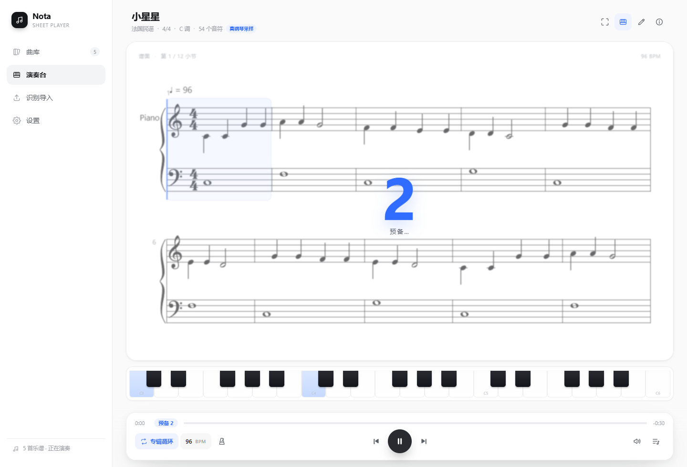
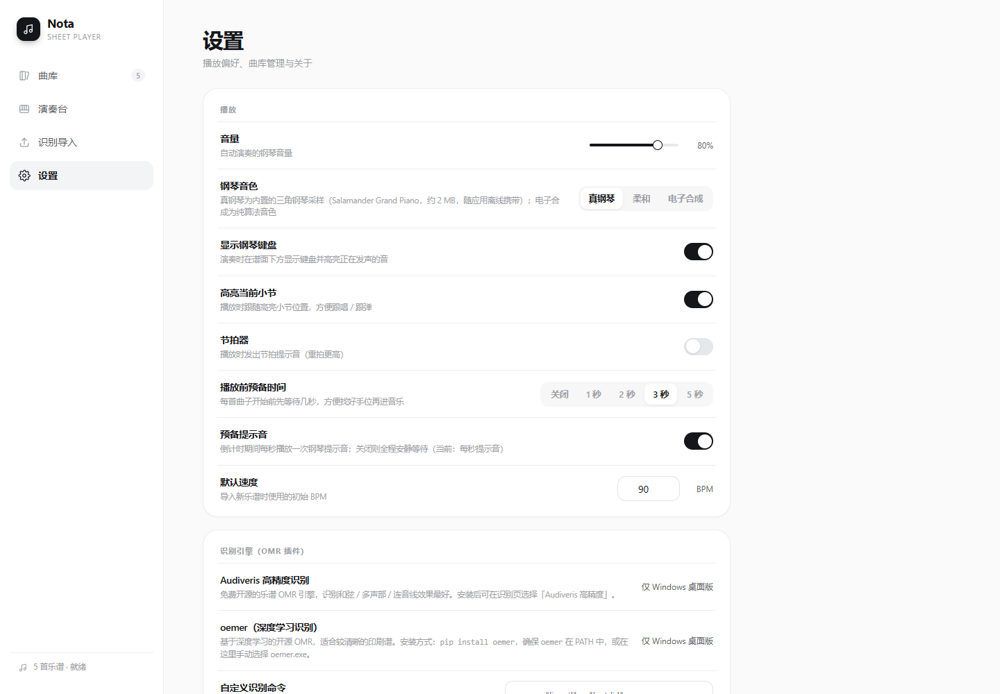
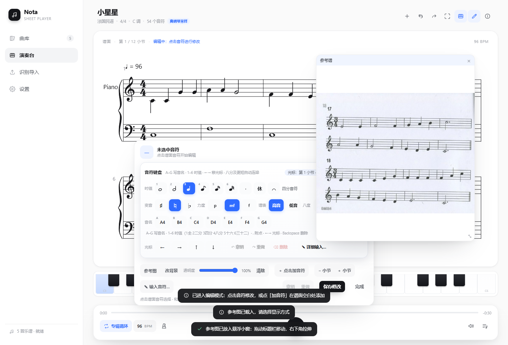
参考图只用于对照，不会保存进乐谱、也不会被导出。
Nota 的曲库保存在本机 IndexedDB 中，不上传服务器；换设备前记得导出备份。
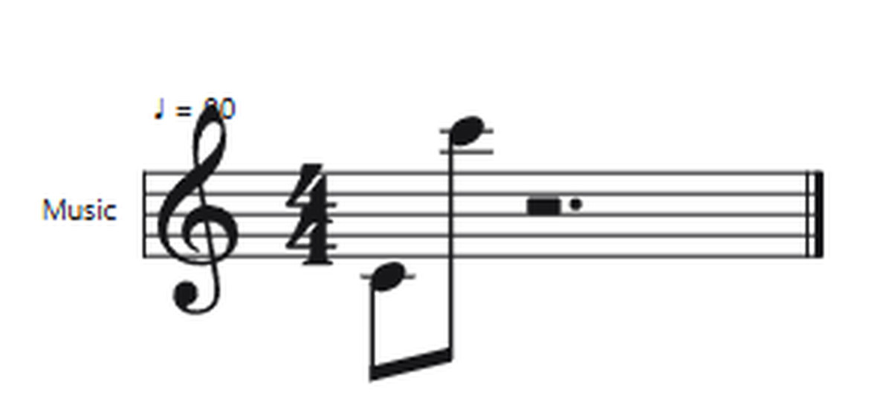
免费使用。曲库、设置、识别结果都保存在你本机的浏览器 / App 存储（IndexedDB）里，不会上传到服务器；换设备前请在设置里备份。
Windows 10 / 11 64 位（便携版 exe 或 zip），以及 Android 6.0 及以上（APK）。手机与电脑是同一套 UI 逻辑，手机端有专门的音符键盘布局。
安装包没有购买代码签名证书，所以 SmartScreen 会提示。点“更多信息 → 仍要运行”即可；也可以先用 SHA-256 校验下载文件。
在系统设置里允许当前浏览器 / 文件管理器“安装未知应用”，然后重新点击 APK 安装。
请先升级到 v1.20.0 及以上（修复了桌面 app:// 与手机 WebView 下 PDF worker 无法加载的问题）。如果仍失败，把 PDF 用 Chrome 打开后“打印 → 另存为 PDF”再导入，或把报错信息反馈给我们。
.lysc 是来音制谱的加密私有格式，没有公开规范或密钥就无法直接解密。请在来音里导出 PDF 或 MIDI 再导入 Nota，效果更好。App 内也会显示转换指南。
在打字输入模式下点「⌨ 调出键盘」会聚焦隐藏输入框并调起系统键盘，同时编辑面板自动收成一条输入栏；点「完成输入」恢复。如果键盘没弹出，再点一次按钮，或检查系统输入法设置。
已在 v1.48.0 修复：连梁组现在会统一计算符干方向。升级后若还有个别异常，把谱面截图发给开发者定位。
不会。覆盖安装 / 替换便携版程序不会删除本机曲库；但清除浏览器数据或卸载 App 会。重要乐谱建议定期备份。
下载后 3 分钟，就能听到第一首由它演奏的曲子。